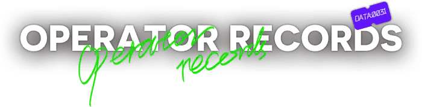
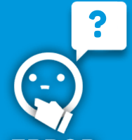

SOFTWARE ENGINEER
adalah seorang profesional yang merancang, mengembangkan, dan menguji aplikasi perangkat lunak dan sistem komputer untuk memecahkan masalah dunia nyata.

[Name] Dion Marshall Avalon Adhiseputro
[Gender] Male
[Experience] 4 years
[Faction] Universitas Pasundan
[Race] Homo Sapien
[Place of Birth] Cimahi
[Date of Birth] 21 March 2006
[Gender] Male
[Experience] 4 years
[Faction] Universitas Pasundan
[Race] Homo Sapien
[Place of Birth] Cimahi
[Date of Birth] 21 March 2006

WHO IS DION?
Saya, Dion Marshall Avalon Adhiseputro, adalah seorang Software Engineer lulusan Universitas Pasundan yang berbasiskan di Bandung. Saya berpengalaman dalam perancangan perangkat lunak dan telah berkontribusi dalam pengembangkan berbagai aplikasi dan video game, beberapa diantaranya yakni aplikasi pemutar video musik "MPlayer" dan indie game "Re:Knights".
Dion ialah seseorang yang termasuk dalam kategori seorang "Gamer", yang dimana hal inilah yang menginspirasinya untuk bisa mengembangkan video gamenya sendiri. Dengan cita-citanya untuk bergabung dengan salah satu studio-studio game ternama, ia terus mengasah kemampuannya dalam bidang pengembangan software dan video game.